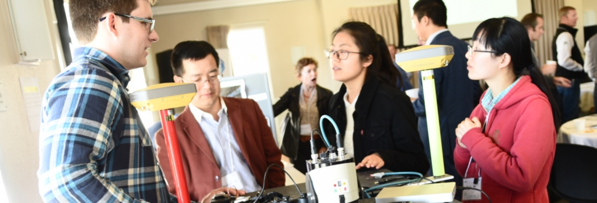
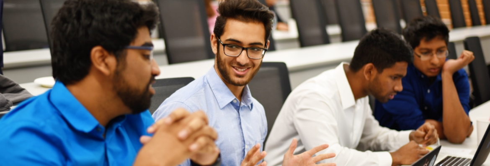
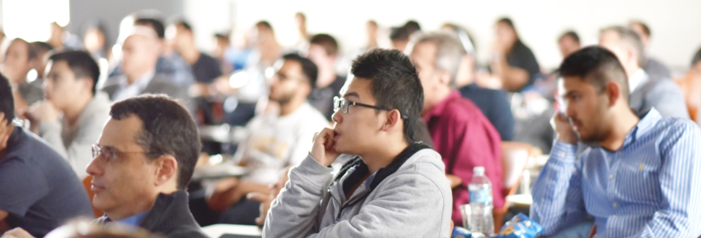
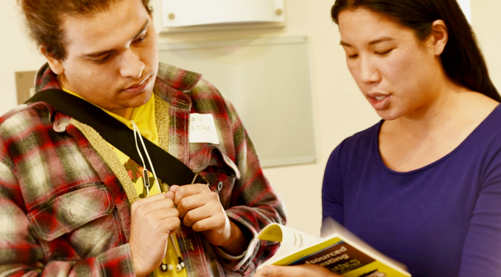

CITRIS hosts many events throughout the year, bringing together faculty, students, and corporate leaders. Some of CITRIS's staple events are displayed below:

The Agricultural Technology Fair (ATF) aims to showcase emerging technologies in agriculture, backed by cutting-edge research and entrepreneurial innovation, transforming the region of San Joaquin Valley. CITRIS is focused on shortening the pipeline from idea to impact in the many sectors that affect the lives of all Californians by putting the San Joaquin Valley on the map for new ideas and transformative impact in the agricultural technology sector, in the areas of: health data analytics, to renewable energy and smart transportation, to breakthroughs in water information management.

Originating at UC Merced in 2011, the CITRIS Mobile App Challenge (MAC) is a semester-long competition that empowers undergraduate students to develop mobile apps for social impact while fostering innovation, community service, and career development. Guest speakers, industry mentors, and peer networking help students move rapidly from idea to prototype over the course of a semester.
At the start of the Spring 2017 semester, 25 teams and 69 students joined the Challenge to design, build, and pitch their ideas in the following categories of: Connected Communities & Civic Tech, Health & Wellness, People & Robots, Sustainability & the Environment.
FIT
Frontiers in Technology

The Agricultural Technology Fair (ATF) aims to showcase emerging technologies in agriculture, backed by cutting-edge research and entrepreneurial innovation, transforming the region of San Joaquin Valley. CITRIS is focused on shortening the pipeline from idea to impact in the many sectors that affect the lives of all Californians by putting the San Joaquin Valley on the map for new ideas and transformative impact in the agricultural technology sector, in the areas of: health data analytics, to renewable energy and smart transportation, to breakthroughs in water information management.

The aim of Cyber Aware Day is to educate students from all backgrounds on the rapidly-developing world of cyber security. Industry experts will convene to discuss what cyber security is, what its challenges are, and the landscape of job opportunities that this space presents for students.